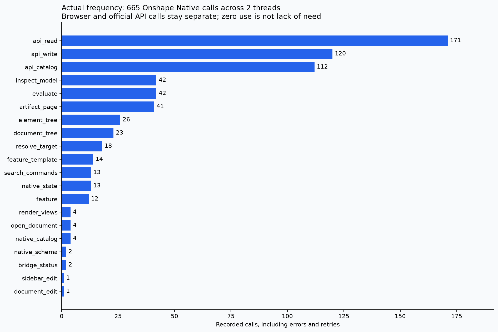
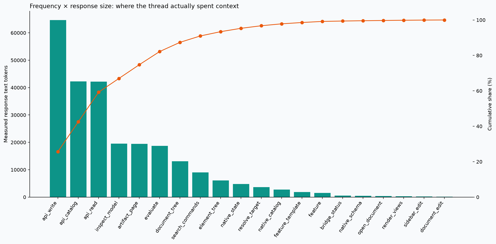
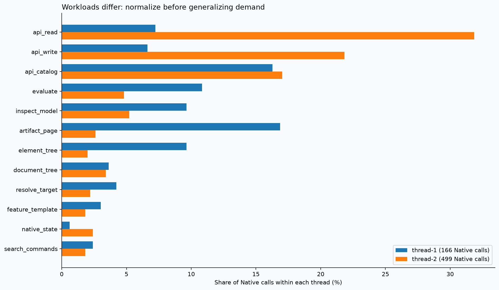
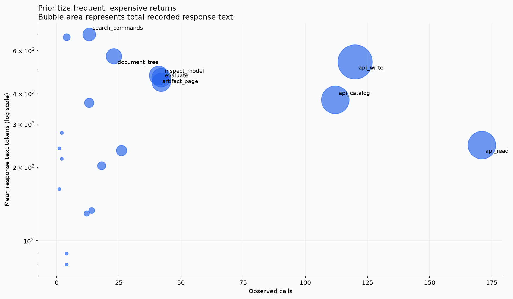
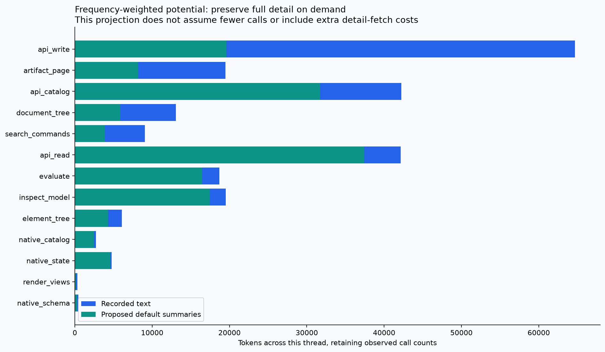
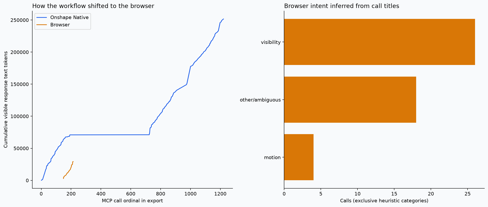

665 Native calls · 508 official API calls (separate) · 48 browser calls · 2 threads. Text tokens only; images and missing responses excluded. Cache artifacts validate provenance, not frequency. Zero use does not mean a capability is unnecessary.
Size audit · Analysis and recommendations · Frequency CSV · Full measurements
Click a heading to sort. Mean = measured response text subtotal / responses present. Unobserved tools retain their full functionality.





